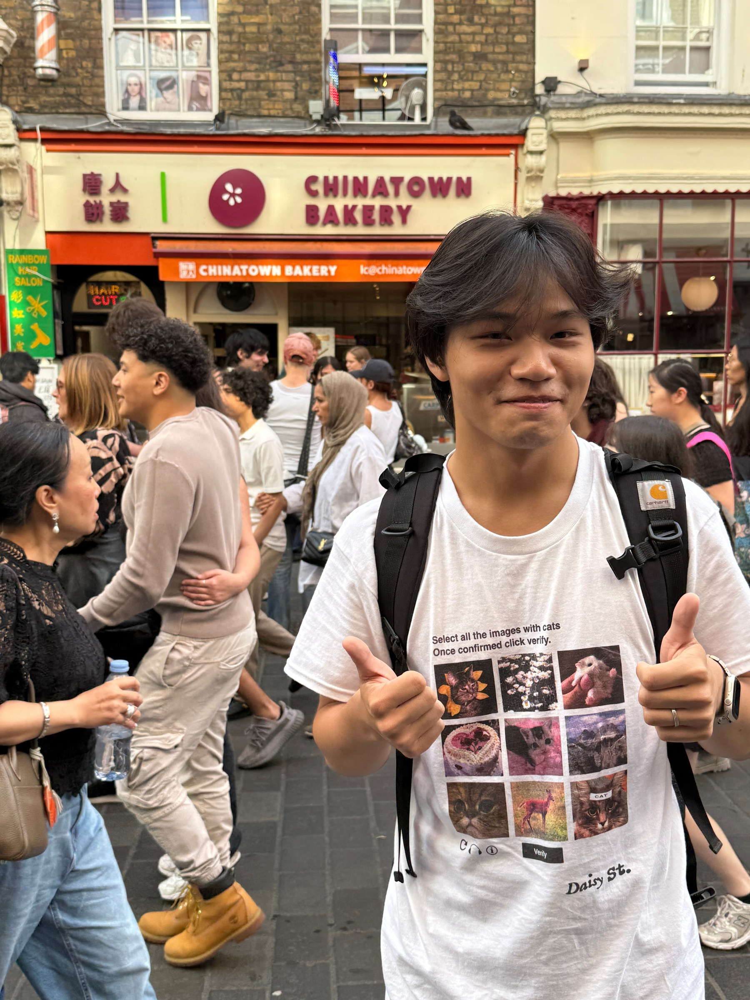
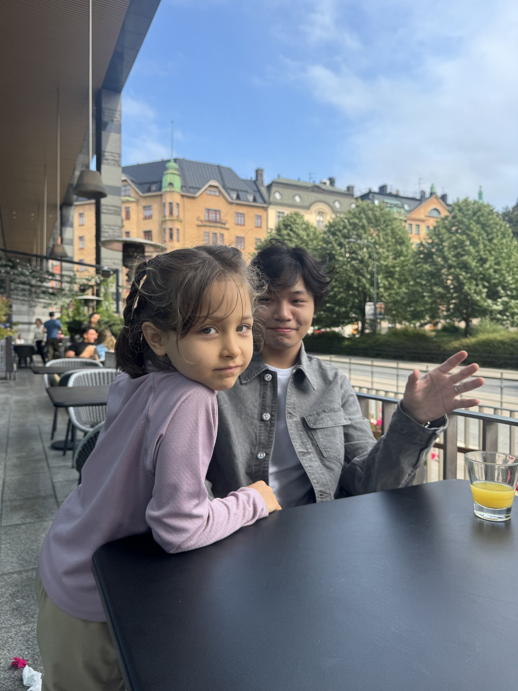

I'm a penultimate-year student at The University of Hong Kong, majoring in Information Management. Beyond coursework, I design websites and use tools like Photoshop to make products more appealing to the people who use them.
When I'm not studying, I travel and explore nature — it resets my focus, broadens my perspective, and helps me collaborate with diverse teams around the world.
